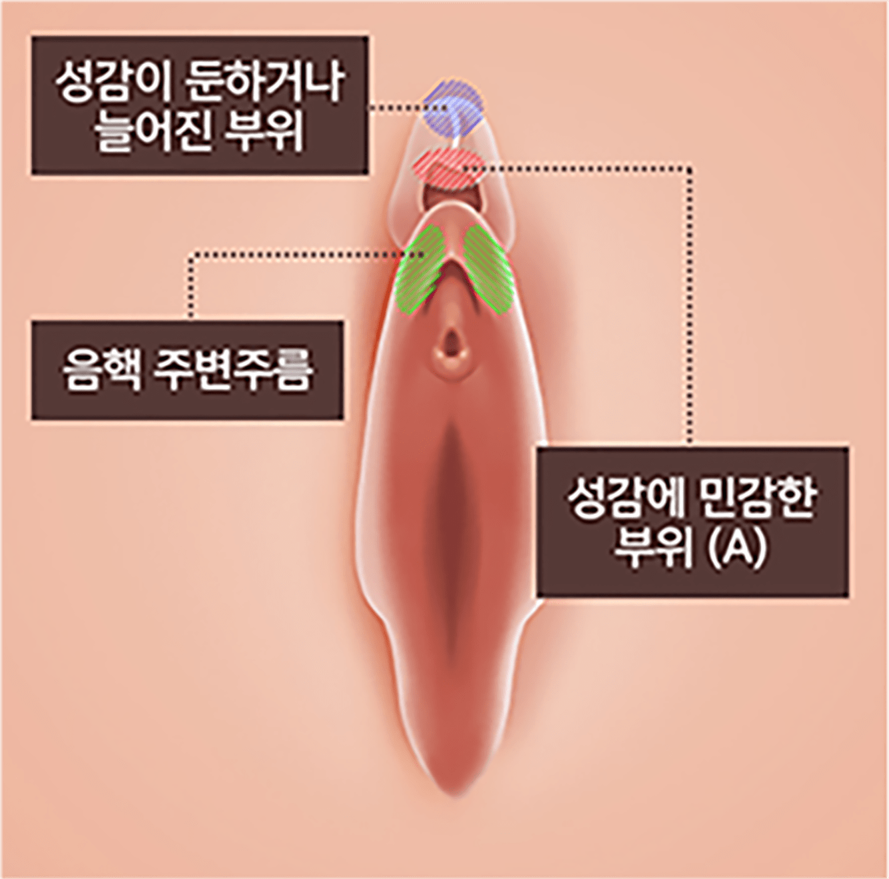
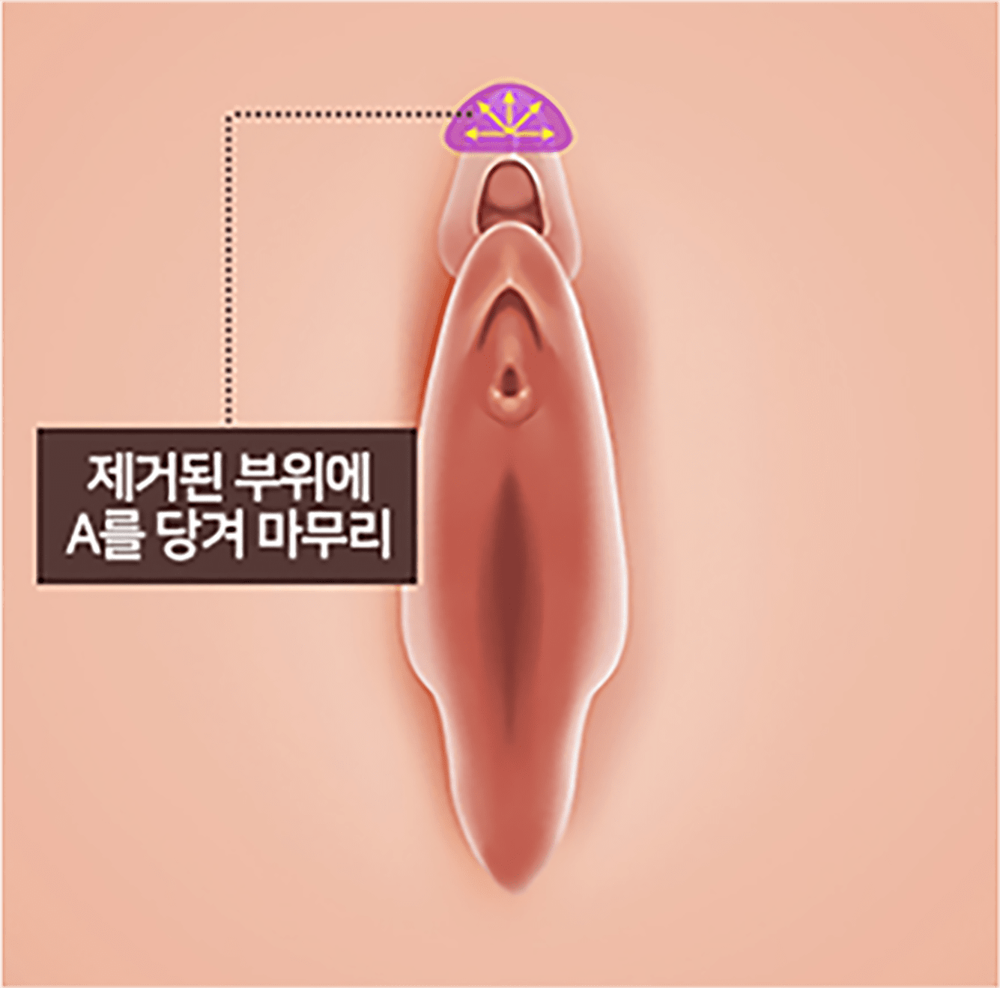
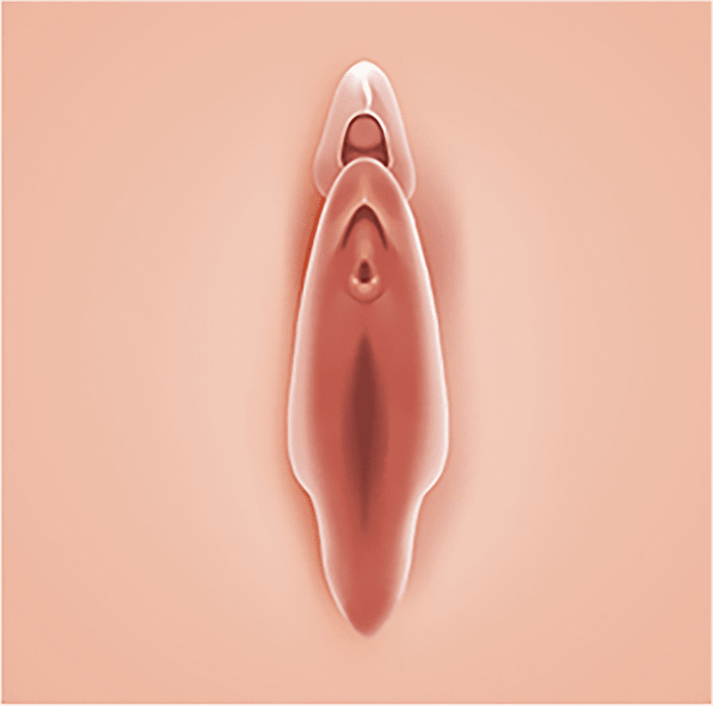

나를 위한 음핵수술
나를위한 산부인과의
“음핵커플술”
은
의료진의 노하우와 기술력으로
여성의 성감 개선과 함께
위생적인 유지가 가능하도록 돕는 여성성형입니다
- 수술시간 30분
- 실밥제거 없음
- 회복기간 3일
- 입원여부 없음
- 마취방법 수면+국소마취
나를위한 음핵커플술
동양 여성의 대부분은 눈꺼풀이 두터운 것처럼
두꺼운 피부가 음핵 위에 덮여있어
성감이 둔화되어 있는 경우가 많이 있으며,
나이가 들면서 늘어져 쳐지면 모양이 보기 싫게 됩니다.
나를 위한 음핵커플술은 여성이 자극에 보다
민감하게 반응하게 하여
부부생활에 활력을 주기 위해 하는 수술입니다.
국소마취에서 10~20분 정도 소요되는 간단한 시술
이며,
남성의 적절한 자극으로 질의 윤활작용이
적절하게 일어남에도 불구하고
오르가즘을 한 번도 느껴보지 못한 여성 중
음핵이 심하게 덮여있는 여성의 경우에
효과를 볼 수 있습니다.
-

-

음핵 표피가 늘어나고 성감이 둔해진
경우 덮여있는 피부를 제거
-

음핵커플술을 통해
만족감 상승
음핵커플술 대상자
-
음핵을 덮고 있는 표피가 과도하여
오르가즘을 느끼기 어려운 경우 -
음핵 덮개 부위가 많이 튀어나와 쓸리거나
분비물이 끼여 위생 상 좋지 않은 경우 -
음핵이 너무 커서 일상생활이나
성관계에 불편함을 느끼는 경우 -
성관계의 만족감을 높이거나
성감의 극대화를 원하는 경우

프라이빗한 휴식 과 회복
나를위한산부인과에서는 치료를 받는
환자분들이
긴장을 완화하고 편안한
마음으로 쉬실 수 있도록
고급스럽고
편안한 분위기의 1인 회복실을 제공합니다.
음핵
수술 후 주의사항
시술 후 주의 사항은 개인 차가 있을 수 있습니다.
-
01
붓기와 통증을 가라앉히기 위해, 수술 후 3일 이상 수술 부위를
아이스팩으로 냉찜질해 주세요.
(아이스팩을 키친타월 등으로 감싼 후
수술 부위에 대시고 생리대를 사용해 주세요) -
02
샤워는 수술 다음날 저녁부터 가능하시며, 수술 당일에는 피해주세요.
아래의 과정을 3주간 하시게 됩니다. -
샤워
건조
-
소독 면봉을
이용해 소독 건조
-
마데카솔 분말 도포
-
03
수술 부위 진물과 출혈은 1~2주 정도 패드에 묻어납니다.
(샤워와 소독 후에도 상처 및 봉합 부위를 철저히 건조해 주세요) -
04
4주간 성관계, 비데, 탐폰, 무리한 운동
(유산소, 자전거, 헬스, 수영 등)은 피해주세요. -
05
처방된 약은 항생제와 소염진통제입니다.
만약 복약 후 알레르기 반응(가려움, 두드러기, 설사, 복통)이
생기실 경우 복약을 중지하시고 본원으로 연락주세요. -
06
본원에서 사용하는 봉합사는 성형 전문 실로 상처 부위를 잘 아물게
하여 흉터가 적게 생기며, 2~3주 내 체내에 흡수되기에 실밥을
제거할 필요가 없습니다.
다만 실밥이 녹으면서 가려우시거나
실밥이 일부 남아 있는 경우 수술 후 2주 차에 제거 가능합니다. -
07
수술 경과를 관찰하기 위해 수술 다음 날, 1주, 2주, 4주 차 때
내원해 주세요. -
08
회복 기간은 환자마다 상이하나 평균 3~4주입니다.
-
09
수술 후 생리대를 다 적실 듯한 과한 출혈이 있을 경우 병원으로 연락 주세요.